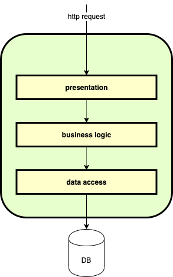

このCodelabでは、Chapter1で使ったサンプルアプリケーションを、テスタビリティの高いのアーキテクチャにリファクタしていきます。 Chapter1で使ったサンプルアプリケーションは、handlerと呼ばれるモジュールにすべての処理を書いたバージョンでした。 このChapterでは適切に責務を分割し、続くChapter3でテストを実装するために3層構造のアーキテクチャへリファクタをしていこうと思います。
まずは3層構造のアーキテクチャについて解説します。 システムを役割・責務ごとに3つの層に分割し、 それぞれのレイヤはひとつ下のレイヤにのみ 依存するように設計するアーキテクチャです。 伝統的にはデータの永続化層（DBなど）へアクセスするデータアクセス層、システムの中心のロジックを実装するビジネスロジック層、 システムのクライアントからの要求の受け付け、ビジネスロジックを呼び出すプレゼンテーション層から構成されます。
模式図としては以下のようになります。

プレゼンテーション層はビジネスロジック層に、ビジネスロジック層はデータアクセス層にのみ依存するように設計します。 プレゼンテーション層がデータアクセス層にアクセスしたり、データアクセス層からビジネスロジック層へアクセスしたり、 といったようなことはおこらないようにしましょう。
それぞれの層の責務をまとめて記載していきます。
Codelabでリファクタリングの対象とする3層構造のアーキテクチャについて解説しました。 次のStepから、サンプルアプリケーションを用いて実際にリファクタを行っていきます。
確認のため、前回のチャプターで実装したテストを動かしてみましょう。レポジトリの直下で
$ make test/e2e
と実行してください。以下の通りにPASSするはずです。
go test -count=1 ./e2e/...
ok github.dena.jp/swet/go-sampleapi/e2e 0.220s
PASSしたらリファクタの準備は完了です。次のStepからは早速リファクタに取り掛かりましょう。
handlerの内部で使われている変数・定義のうち、他のlayerをまたぐものについて、internal以下のsub packageに配置し、 依存関係を整理しましょう。
internal/handler/error.goのうち、APIErrorの型定義と、Errから始まる定数を移動しましょう。 internal/apierrのerror.goに、handler/error.goからcopyしましょう。
package apierr
type APIError string
func (a APIError) Error() string {
return string(a)
}
const (
ErrBadRequest APIError = "不正なリクエストです"
ErrInternalServerError APIError = "サーバでエラーが発生しました"
ErrEmailAlreadyExists APIError = "すでに登録されています"
ErrUserNotExists APIError = "ユーザは存在しません"
)
次に、handler/error.go から、copyした部分を削除します。
package handler
import (
"encoding/json"
"net/http"
)
type ResError struct {
Message string `json:"message"`
}
func writeError(w http.ResponseWriter, code int, err error) {
w.Header().Set("Content-Type", "application/json;charset=utf-8")
w.WriteHeader(code)
resp := &ResError{Message: err.Error()}
json.NewEncoder(w).Encode(resp)
}
この状態でbuildをしてみましょう。
$ make
以下のように、internal/handler/user.goにbuildでerrorが出るはずです。
go build -o bin/api .
# github.dena.jp/swet/go-sampleapi/internal/handler
internal/handler/user.go:38:41: undefined: ErrBadRequest
internal/handler/user.go:44:41: undefined: ErrBadRequest
internal/handler/user.go:51:50: undefined: ErrInternalServerError
internal/handler/user.go:64:50: undefined: ErrInternalServerError
internal/handler/user.go:67:41: undefined: ErrEmailAlreadyExists
internal/handler/user.go:75:50: undefined: ErrInternalServerError
internal/handler/user.go:83:50: undefined: ErrInternalServerError
make: *** [build] Error 1
移動したErr...の定義が見つからなくなったので、buildが通らなくなっています。
下のように、適宜Err...にpackageを追加していきましょう。
// request validation
if err := validator.Validator.Struct(&user); err != nil {
- writeError(w, http.StatusBadRequest, ErrBadRequest)
+ writeError(w, http.StatusBadRequest, apierr.ErrBadRequest)
return
}
追加し終えたらbuildを走らせてみましょう。
$ make
成功すればOKです。
変数・定義の移動はシンプルですが、重要なリファクタリングの一種です。 では、次はロジックの移動をしましょう。
repositoryとは、外部へのデータアクセスを抽象化する役割を果たすモジュールです。 今回のアプリケーションでは、データは全てMySQLに永続化されます。 ですので、今回のrepositoryとは、MySQLへのアクセスを抽象化するモジュールとなります。
それでは、internal/handler/user.goのPostUser関数の中を見て、MySQLに接続している部分を切り出して行きましょう。
PostUserの中では2箇所、 61行目の select id from users ~ の部分と、 73行目の insert into users ~の部分が 見つかると思います。これらを個別のメソッドとして internal/repository/user.goに実装していこうと思います。
internal/repository/user.goを開き、中を見てみましょう。 import の下にこれから実装するメソッドの雛形が書かれています。
...
type User struct{}
func NewUser() *User {
return &User{}
}
...
最初の部分は、構造体の宣言と初期化のFactory Methodが記述されています。 Factory Methodではただ構造体のpointerをreturnしているだけですが、 もしこの構造体に 依存 が存在する場合は、このFactory Methodに引数で依存を渡すスタイルの実装にしていこうと思います。 依存があるパターンのFactory Methodの実装は、次の usecase のリファクタで見てみることにします。
それでは、EmailからUserを探してくるメソッドを実装してみましょう。このメソッドは、emailが重複したユーザが存在していなかどうかをチェックするために必要なものです。
以下の雛形部分に対して実装していきます。
func (u *User) FindByEmail(ctx context.Context, queryer sqlx.QueryerContext, email string) (*model.User, error) {
// TODO methodを実装する
panic("implement me")
}
雛形の関数の引数をチェックしてみましょう。 第1引数で context.Contextを受け取っています。 contextは主に処理のキャンセルに用いられるものです。 http requestが途中で中断された場合に、DBのアクセスまで一貫して中断処理を行うためのGoの共通の仕組みです。
第2引数でsqlx.QuererContextを受け取っています。 これは、DBにアクセスするためのinterfaceで、実態はsqlx.DBや sqlx.Txなどが考えられます。 また、今回は行いませんが、Test時にMock/Stub等を挟み込むことができ、実際にDBアクセスを行わなくてもTestが可能になります。
第3引数では検索対象のemail addressを受け取っています。
返り値としては、*model.Userおよび、errorが定義されています。
さて、前置きが長くなってしまいましたが、メソッドを実装してみましょう。 FindByEmailの中を下記のように実装してください。
func (u *user) FindByEmail(ctx context.Context, queryer sqlx.QueryerContext, email string) error {
var m model.User
if err := sqlx.GetContext(ctx, queryer, &m, "select * from users where email = ?", email); err == sql.ErrNoRows {
return nil, apierr.ErrUserNotExists // sql.ErrNoRowsを隠蔽するために、errorの翻訳を行っている
} else if err != nil {
return nil, err
}
return &m, nil
}
引数で与えられたemailから、userを探し、構造体に値を格納して返しています。 sqlx.GetContextというメソッドを使っています。 DBにレコードが存在しなかった場合、sql.ErrNoRowsが返されるのですが、repositoryでDBの具体的な実装（ここではMySQLのこと）を隠蔽するために、エラー翻訳を行っています。
これにてUserをemailで検索するメソッドは完成です。 このメソッドのtestについては、Chapter3で書いていくことにします。今はリファクタを続けていきましょう。
つづいて、UserをDBにinsertするメソッドを実装してみましょう。 Createの中を見ます。
func (u *User) Create(ctx context.Context, execer sqlx.ExecerContext, m *model.User) error {
// TODO methodを実装する
panic("implement me")
}
第1引数contextと、第2引数sqlx.ExecerContext、第3引数として、作成するユーザの情報が格納された構造体が渡されています。 sqlx.ExecerContextは、 sqlx.Queryerと似たような役割をもつ構造体で、更新系のクエリを発行する場合は、こちらを使います。
返り値は、errorのみです。
実装にあたり、いくつかヒントを書いておきます。
insert into users(first_name, last_name, email, password_hash) VALUES (?, ?, ?, ?) です（?はplaceholder)。execerのExecContextを使って、INSERTしてみましょう。userのIDが決まる（auto increment)ので、execer.ExecContextの返り値である、ResultSetのメソッドを呼び出し、LastInsertIDを取得し、引数で渡されている m *model.User のIDにセットしましょう。FindByEmailでは エラー翻訳 を行いましたが、Createでは翻訳すべきエラーはありません（DBからのエラーは全て回復できないエラーとして、returnしましょう）。実装が完了したら、answer/internal/repository/user.goを見て、回答と比べてみましょう。
これでSQLの切り出しは完了しました。次は、実装したrepository/user.goの呼び出し部分をまとめたusercaseを実装してみましょう。
次に、business logicを実装するusecaseへのリファクタをおこないましょう。 internal/usecase/user.goを見てみましょう。ここにもメソッドの雛形があります。
まずは型定義とFactory Methodを見てみましょう。
type userRepository interface {
FindByEmail(ctx context.Context, queryer sqlx.QueryerContext, email string) (*model.User, error)
Create(ctx context.Context, execer sqlx.ExecerContext, m *model.User) error
}
type User struct {
userRepo userRepository
db *sqlx.DB
}
func NewUser(userRepo userRepository, db *sqlx.DB) *User {
return &User{
userRepo: userRepo,
db: db,
}
}
前のStepで触れた、「依存があるパターンのFactory Method」が出てきています。 このように、依存がある場合はFactory Methodの引数で受け取るような実装に統一しましょう。(統一のメリットはあとで触れます）
依存の定義についても注目してみましょう。 userRepositoryというinterfaceが定義されています。前のStepで実装したUserの 型 に直接依存するのを避け、 同じシグネチャを持つinterfaceを定義し、それに依存するようにしています。 このパターンにより、各layer間の結びつきを緩めることができ、 更にTest時に依存をmock/stubに簡単に差し替えられるようになり、簡単にtestを記述できるようになります。 詳しくは、次のChapterで触れます。
Createの雛形を見てみましょう。
func (u *User) Create(ctx context.Context, m *model.User) error {
// TODO methodを実装する
panic("implement me")
}
context.Contextを第1引数、作成対象のuserのデータが入った構造体を第2引数で受け取っています。 第2引数で渡されたuserを使って、repositoryを呼び出し、ユーザ作成のロジックを書いてみましょう。
func (u *User) Create(ctx context.Context, m *model.User) error {
_, err := u.userRepo.FindByEmail(ctx, u.db, m.Email)
// 不明なerrorの場合はwrapしてreturn
if err != apierr.ErrUserNotExists && err != nil {
return fmt.Errorf("user find with email %s failed: %w", m.Email, err)
}
// errorが発生していない = Emailのuserが存在するということなので、errを返す
if err == nil {
return apierr.ErrEmailAlreadyExists
}
~省略~
メソッドの前半部分はこのように実装します。
最初にuserRepositoryのFindByEmailを呼び出しています。この際、第2引数のsqlx.QueryerContextは、 usecaseの依存の、*sqlx.DBを渡すことができます (後で使う、sqlx.ExecerContextも同様です） 。
その後のerror handlingは少し複雑な実装になっています。 まず、受け取ったパラメータを元に、userRepositoryのFindByEmailを呼び出し、作成可能なユーザかどうかのチェックを行っています。 このユースケースでは、指定したEmailのユーザが存在しないのが正常系なため、repositoryから、ErrUserNotExistsが返ってくるのが正常です。 逆にユーザが存在してしまったケースは、ErrEmailAddressAlreadyExistsというエラーを呼び出し側に返す実装になっています。 それ以外のエラーは原因が不明かつ、usecaseで回復できないので、errをWrapして、呼び出し側に返しています。 errorのWrapや、handlingについては、後で詳しく触れます。
repository から返ってきた他のerrorはusecaseの層では回復できないので、FindByEmailのときと同様の手法でWrapし、呼び出し側にreturnしましょう。実装が完了したら、answer/internal/usecase/user.goを見て、回答と比べてみましょう。
これでusecaseの切り出しは完了です。それではhandlerからこのusecaseを呼び出して見ましょう。
それではhandlerを修正し、実装したusecaseのメソッドを使ってみましょう。
まずは、PostUserの関数のシグネチャを修正しましょう。
dbはもはや不要なので、代わりにusecaseを受け取るように修正します。
-func PostUser(db *sqlx.DB, logger *logrus.Logger) http.HandlerFunc {
+func PostUser(userUsecase *usecase.User, logger *logrus.Logger) http.HandlerFunc {
次に、 /* TODO: 以下の処理をusecaseとrepositoryに移す */ というコメントが書いてある行から、 /* ここまで */ というコメントがある行までを削除し、 以下のコードをcopyしてみましょう。
m := &model.User{
FirstName: user.FirstName,
LastName: user.LastName,
Email: user.Email,
PasswordHash: string(hash),
}
err = userUsecase.Create(ctx, m) // ここでメソッドを呼び出している
if errors.Is(err, apierr.ErrEmailAlreadyExists) {
writeError(w, http.StatusBadRequest, apierr.ErrEmailAlreadyExists)
return
} else if err != nil {
logger.Errorf("user create failed with unknown err: %w", err)
writeError(w, http.StatusInternalServerError, apierr.ErrInternalServerError)
return
}
usecaseのCreateのメソッドを呼び出すのみといったコードです。 このusecaseで、ハンドリングするべきエラーはErrEmailAlreadyExists、つまり、作成しようとしたユーザがすでに存在してた場合のみです。 それ以外は、全てInternal Server Errorとして処理します。
最後に、responseを返している箇所のIDだけ修正して、完了です。
json.NewEncoder(w).Encode(&ResPostUserJSON{
- ID: int(id),
+ ID: m.ID,
FirstName: user.FirstName,
LastName: user.LastName,
Email: user.Email,
main.goを修正し、usecaseを初期化し、dbの代わりにusecaseを渡すようにしましょう。
- r.HandleFunc("/users", handler.PostUser(db, logger)).Methods("POST")
+ userUsecase := usecase.NewUser(repository.NewUser(), db)
+ r.HandleFunc("/users", handler.PostUser(userUsecase, logger)).Methods("POST")
buildが通れば修正完了です。
$ make
go build -o bin/api .
error handlingの方式について補足します。usecaseからreturnされたerrをチェックする箇所で、errors.Isというメソッドを使っています。 これはGo1.13から追加されたメソッドです。 基本的には、（特に今回のケースでは）下のように、ifでチェックするスタイルと変わりはありません。
if err == app.ErrEmailAlreadyExists {...}
ですが、errors.Isは、Wrapされたerrorでもチェックできます。 下のケースを見てみましょう。
var Err = errors.New("err")
func DoSomething() error {
return Err
}
func WrapSomething() error {
if err := DoSomething(); err != nil {
return fmt.Errorf("wrap: %w", err) // `: %wでwrapする。（Go1.13からのStyle)`
}
return nil
}
func main() {
err := WrapSomething()
if err == Err {
log.Println("==での比較")
}
if errors.Is(err, Err) { // Wrapされたerrでも、元の型でハンドリング可能
log.Println("errors.Isでの比較")
}
}
WrapSomething() で ErrEmailAlreadyExists をWrapしています。 errorのwrapはstack traceを保持するために重要なテクニックとなるのですが、== でのhandlingができなくなってしまいます。 errors.Isではその問題を解決しており、Wrapされたerrでも元の型でハンドリングすることが可能となっています。 他にもerrors.Asなどの関数が用意されているので、調べてみてください。
usecaseを初期化している場所を見てみましょう
userUsecase := usecase.NewUser(repository.NewUser(), db)
このように、usecaseの依存を手動で組み立てています。今回のように、依存の関係がsimpleなものは特に問題は起こりませんが、 例えば、重層的な依存関係など、依存グラフが複雑になると、初期化のために膨大なコードを書かなければならない ケースがあるかとは思います。 (注： もちろんそうならないように設計するのがBestです) そういった問題を解決するために、GoでもDI(Dependency Injection)のライブラリを用いることがあります。 DIライブラリでは、依存の解決を簡単に行ってくれ、初期化時の不要なコードを削除できます。 もし、初期化の部分で複雑になりすぎていると感じるようでしたら、DIライブラリの導入を検討してみましょう。
DIのライブラリでは、対象のモジュールのFactory Method（あるいはConstructor）を呼び出すことにより、依存を注入する実装のものが多いです。 DIライブラリを使わない場合でも、将来そういったライブラリを使用することを想定し、Factory Methodを用意しておくことをおすすめします。
DIのライブラリはwireなどのライブラリが有名です。 他にも有名なものがいくつかあるので、自分たちにあったものを探してみる、あるいは、開発してみるのも面白いかもしれません。
これでリファクタが完了しました。それではE2Eを実行し、外部の振る舞いが壊れていないかどうかをチェックしましょう。
最後に、正しくリファクタが行われているかどうかを確かめるために、Chapter1で準備したE2E Testを流してみましょう。
handlerの初期化部分（dbをusecaseに修正する）と、errorのパッケージ変更により、そのままではビルドが通らなくなっているかと思います。 同様の修正を行い、buildが正しく通るようになった上で、テストを実行してみましょう。
$ make test/e2e
下記のようにPASSすればOKです。
go test -count=1 ./e2e/...
ok github.dena.jp/swet/go-sampleapi/e2e 0.222s
お疲れさまでした、これでリファクタは完了です。 次のChapterで、どのようにTestが書けるのかを試してみましょう。